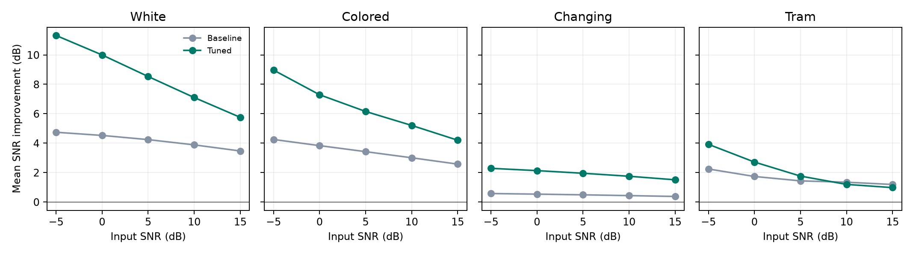

Held-out results
Mean SNR improvement was +2.41 dB for the baseline and +4.73 dB for the tuned method. At 10 and 15 dB in the tram condition, tuning performed slightly worse than the baseline.

Each point averages 12 held-out speakers. Positive values indicate lower waveform error after enhancement.
Trial data · Development grid · Settings and summary
Demonstration
The narrated demonstration shows the actual WAV command output and plays the input and processed output at the same playback scaling. Narration is synthetic.
Listen to the same utterance four ways
Colored noise at 0 dB input SNR. The four files share a time axis and playback scaling.
Excerpt 1993-147964-0000, Mini LibriSpeech SLR31 under CC BY 4.0. Truncated and level-adjusted, with added noise or enhancement as labelled.
Run the experiment
GitHub repository and setup instructions
python scripts/evaluate_final.py dev-clean-2.tar.gz --recorded-noise path/to/tram.wav
Omit the optional course recording to run the three synthetic-noise conditions. The speech in all conditions comes from real recordings.